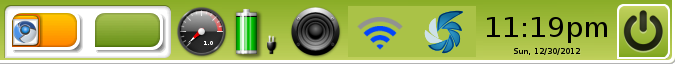
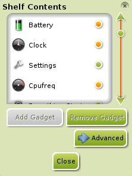

[kliknite na bilo koju sliku za uvećanje]
Ovaj deo kombinuje vodiče za Police & Gedžete zbog njihove povezanosti.
Police
Police u Enlightenment (E17) su slične "Panelima" koji se koriste u drugim okruženjima kao što su Gnome, LXDE, i KDE. Njihova glavna namena je da ugoste gedžete.
Standardna (default) Polica (Shelf) će sadržati različite gedžete u zavisnosti koji Profil je izabran, ali neki zajednički su: Start, Taskbar, Sistem Podmetač (Systray), Sat (Clock), itd. Moguće je dodati još gedžeta. Takođe je moguće koristiti policu kao "dok", uz malu pomoć Gedžeta po imenu iBar (objašnjen dole u gedžet delu). Takođe je moguće da imate više od jedne Police.
{kind=link}
Dodavanje nove Police
Da dodate novu Policu, izaberite Main Menu>Desktop>Shelves>Add A Shelf. Nova polica će se pojaviti u sredini leve ivice ekrana.
Konfigurisanje Police
Možete konfigurisati Policu iz grafičkog korisničkog interfejsa: desni-klik na Policu, i zatim izaberite Shelf>Settings.
{kind=link}
Slaganje/Položaj
Ova traka(tab) sadrži podešavanja da definiše da li će Polica ostati ispod ili iznad drugih prozora i da li će drugim prozorima biti dozvoljeno da je prekriju.
Važno: Ako Polica sadrži Gedžet Sistem Podmetač (Systray Gadget), Polica mora biti "Iznad Svega (Above Everything)".
Pozicioniranje
Ovde možete izabrati u kom uglu ili na kojoj ivici ekrana će se Polica nalaziti.
Veličina
Ovde možete izabrati veličinu Police i definisati da li će se smanjiti na sadržaj širine ili će biti razvučena po jednoj ivici.
Stil
Ovo podešavanje vam omogućava da izaberete da li će Polica biti vidljiva ili nevidljiva.
Automatsko Skrivanje (Auto Hide)
Ako želite da se Polica sakrije iza ivice kada je ne koristite morate da čekirate opciju Auto-hide the Shelf. Možete takođe da izaberete sakrij/prikaži ponašanje police. Preporučljivo je da izaberete opciju Iznad Svega (Above All) na traci (tab) Slaganje/Položaj (Stacking) ako koristite automatsko skrivanje (autohide) opciju.
Radna Površina
Ova traka (tab) vam omogućava da odredite da li će se Polica pojaviti na svim Virtualnim Radnim Površinama ili samo na nekim.
Gedžeti
Gedžet je skoro sve što vidite na radnoj površini. Gedžeti su ono što neki operativni sistemi nazivaju "Apleti" ili "Vidžeti". To su mali programi koji rade jednu stvar i to rade dobro. Neki obezbeđuju specifične informacije o vašem PC-ju ili vašem okruženju.
Ovaj deo opisuje neke korisne gedžete, pokazuje kako dodati nove gedžete iz E17-ovog repertoara, i kratko objašnjava kako su gedžeti povezani sa Modulima (koji su tema zasebne stranice ovog vodiča). Nekoliko gedžeta se verovatno nalazi na vašoj standardnoj (default) radnoj površini Bodhi Linux-a, u zavisnoti koji Profil ste izabrali prilikom instalacije Bodhi Linux-a.
Imajte na umu da većina gedžeta može biti postavljena direktno na radnu površinu ili na Policu. Postoji nekoliko gedžeta (kao Sistem Podmetač (Systray)) koji se može postaviti samo na Policu.
Primeri Gedžeta

(Analogni sat)

(Graficki prikaz vremena u zadatom regionu)

(Menjač za Virtualne Radne Površine)
Dodavanje Novih Gedžeta na Radnu Površinu
{kind=link}
{kind=link}
Postoji više načina za dodavanje gedžeta na radnu površinu. Najčešći su:
1. Idite na Main Menu>Desktop>Change Gadgets.
Izaberite koji Gedžet iz liste želite da dodate. Zatim kliknite Dodaj Gedžet (Add Gadget). Ovo je najjednostavniji i najlakši način.
2. Idite na Main Menu>Settings>Gadgets i otvoriće se
Menadžer Gedžeta(Gadgets Manager) sa selektovanom
Lejeri(Layers) trakom(tab). Opcija
Pozadina(Background) stavlja vidljivi gedžet na radnu površinu (Hover (Key Toggle) opcija je van okvira ovog Vodiča). Selektujte opciju
Pozadina(Background) zatim kliknite dugme
Konfiguriši Lejer(Configure Layer) na dnu
Menadžera Gedžeta(Gadgets Manager). Ovo otvara
Gedžeti Radne Površine (Desktop Gadgets) pop-up, kao u prvom metodu. Izaberite
Gedžet iz liste i pritisnite
Dodaj Gedžet(Add Gadget).
U oba slučaja Gedžet
se pojavljuje u gornjem levom uglu radne površine sa unakrsnim zasenčenjem, pokazujući da može biti pomeran ili promenjene veličine prema vašim zahtevima.
Kada se Gedžet nađe na željenom mestu,
desni-klik na Gedžet da ga zaključate.
Podešavanja Gedžeta (Gadget Settings)
Jednom kada se nađu na radnoj površini ili Polici (Shelf), na svaki Gedžet možete kliknuti desnim-klikom za konfigurisanje njegovog izgleda i ponašanja. Na primer, kada prvi put instalirate Gedžet Prognoza Vremena (Forecasts) , daje vam vremenske podatke za Sofiju, Bugarska. Verovatno to nije ono što želite, osim naravno, ako ne živite tu. Zato desni-klik na njega, i upravljajte do Gadget Forecasts>Forecasts Settings . U dijalog boksu koji se pojavi, videćete instrukcije kako da nađete i unesete kod za vaš grad.

{kind=link}
Dodavanje Gedžeta na Policu
Dodavanje Gedžeta na Policu zahteva malo drugačiji postupak.
Možete dodati nove gedžete ako kliknete desnim-klikom na Policu i onda selektujete Shelf>Contents. Sada možete izabrati Gedžet koji želite na vašoj Polici i kliknite Dodaj Gedžet (Add Gadget).
Kliknite desnim-klikom na Gedžet da promenite mod gde možete da ga pomerate i menjate veličinu. Nakon što ovo odradite trebalo bi da ponovo kliknete desni-klik i izaberete opciju da zaključate veličinu i lokaciju Gedžeta.
*Napomena: gedžet Sistem Podmetač (Systray) može imati samo jednu instancu učitanu, ukupno.
Dok preko iBar-a (Dock via iBar)
Možete da napravite dok od E17 police. Da uradite ovo, dodajte Gedžet iBar, zatim dodajte nove ikonice na njega. Desni-klik na Gedžet pokazuje Gedžet iBar podmeni. Tu možete dodati vaš pokretač programa preko Kreiraj Novu Ikonu (Create new Icon) ili koristite već definisane pokretače programa sa Sadržajem (Contents). U Podešavanjima (Settings) i Izgledu (Look) možete da podesite dizajn.
Gedžetima trebaju njihovi Moduli (Gadgets Need Their Modules)
Koji gedžeti su vam dostupni za dodavanje je odlučeno time koji Moduli su vam Uključeni (Loaded). Uključivanje (Loading) Modula se čita sa diska i postavlja u RAM, ali neće biti prikazani na ekranu dok ih ne dodate kao Gedžete na radnu površinu ili Policu. Da Uključite/Isključite (Load/Unload) Module idite na Main Menu>Settings>Modules. Pogledajte Sekciju Moduli ovog Vodiča za više detalja.
Još više Gedžeta (Still More Gadgets)
Da bi održali preuzimanje i instalaciju Bodhi Linux-a što kompaktnijom, neki odlični Moduli nisu uključeni, ali se mogu preuzeti i instalirati preko Synaptic Menadžera Paketa (Synaptic Package Manager) baš kao i ostali Linux programi.
Za kompletnu listu dostupnih gedžeta proverite Reference o Modulima. Pogledajte Sekciju Modula ovog Vodiča za više detalja o Modulima.